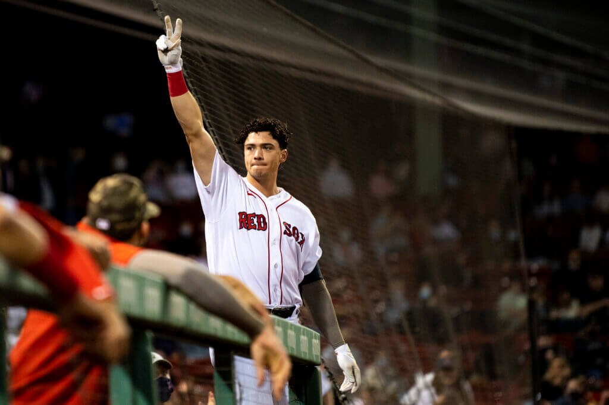
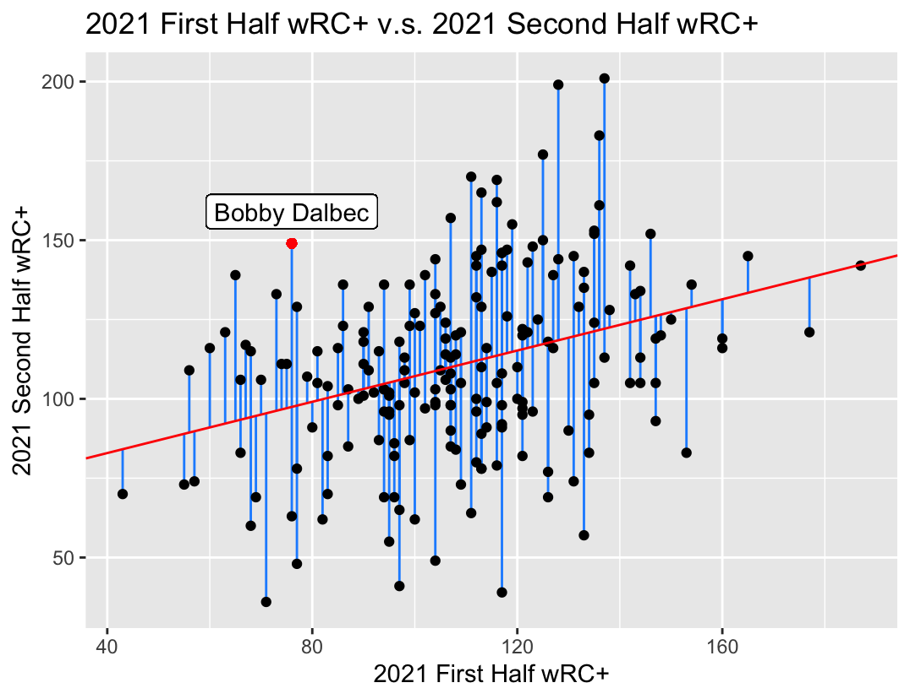
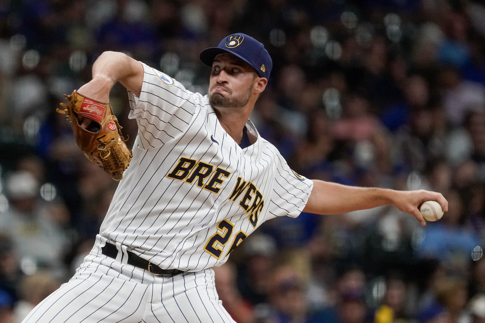
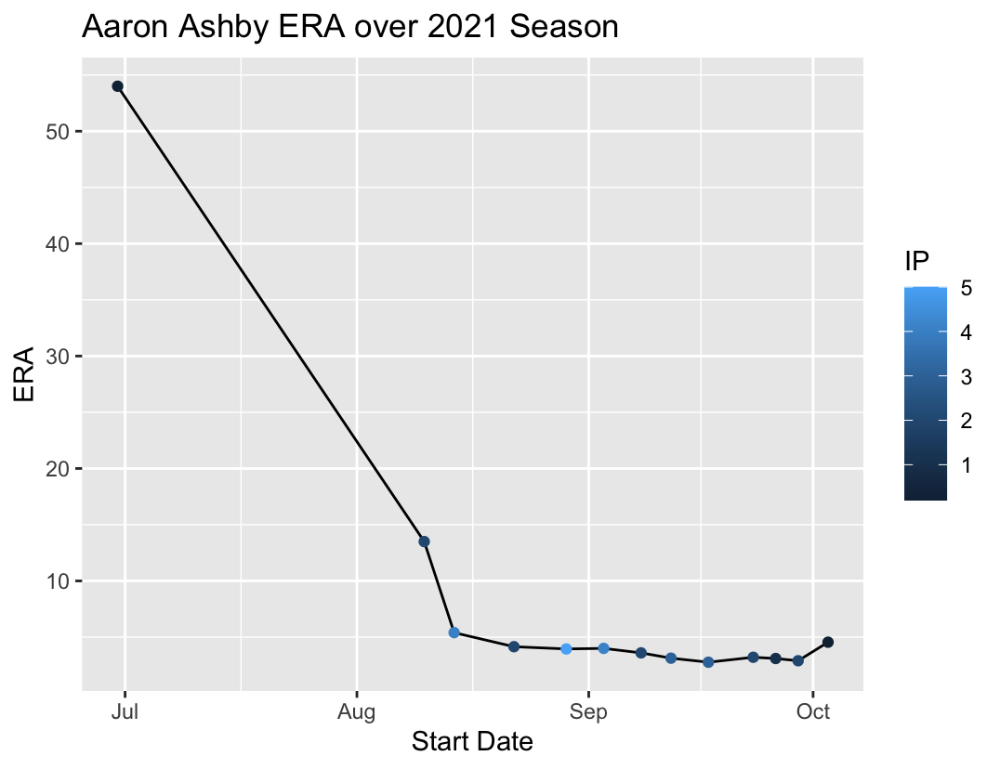
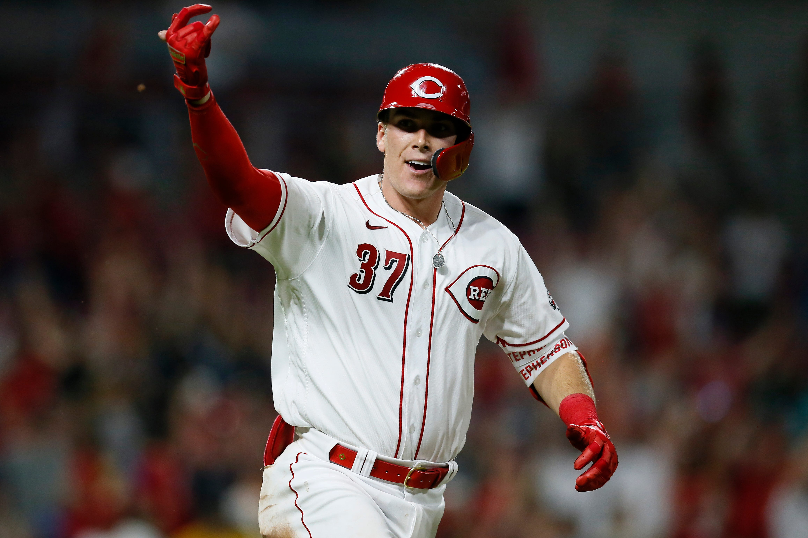

Top Breakout Candidates for the 2022 MLB Season
By Henry Jia | March 28, 2022

Baseball is back! After a lockout that lasted longer than Tom Brady’s retirement, the 2022 MLB Season will finally be underway and baseball fans can’t wait. One of the most exciting aspects of every MLB season is watching players that used to seem like an average day to day starter suddenly blossom into superstars during the year. The common term for athletes like this are breakout players, defined as those with a significant increase in production as compared to the season prior. Last season, baseball fans got to witness breakouts from players like Tyler O'Neill, Austin Riley, Logan Webb, Carlos Rondon, and many others that are now seen as top tier players in the MLB.
Wouldn’t it be cool if we could know who the next batch of breakout players are for the 2022 MLB Season? Well look no further, in this article, we will be breaking down the top candidates for the 2022 MLB Season.
Bobby Dalbec
Boston Red Sox, First Baseman
Last season, in 453 plate appearances, Dalbec slashed a relatively mediocre .240/.298/.494 (AVG/OBP/SLG) with 25 homers and 78 RBIS. He also had one of the worst strikeout percentages in the MLB with a 34.4 K%. At first glance, Dalbec doesn’t seem like someone poised to blossom into a superstar in 2022 and more so fits the stereotypical homerun or bust player. However, if we dig a little deeper, the numbers seem to tell us a different story.
The graph above is a linear regression model between the weighted runs created plus (wRC+) of players with 150+ PA in the first half of the 2021 season and the wRC+ of players with 300+ PA in the second half of the 2021 season, with the red line being a regression line. I am using wRC+ because it quantifies run creation and normalizes it, which allows me to compare players who play in different ballparks, making this statistic a great overall measurement of offensive production. The blue lines represent the residuals, which essentially tells us how much higher or lower a player’s wRC+ in the second half was compared to their expected second half wRC+ given their performance in the first half of 2021. Below is a table of the top 10 players with the highest residual values as well as the difference between their 2021 first half wRC+ and 2021 second half wRC+.
| Player | Residual Value | wRC+ Difference |
| Juan Soto | 80.53 | 71 |
| Bryce Harper | 78.90 | 64 |
| Brandon Belt | 61.30 | 47 |
| Kyle Tucker | 59.74 | 52 |
| Paul Goldschmidt | 58.39 | 59 |
| Corey Seager | 55.38 | 53 |
| Joey Votto | 52.59 | 52 |
| Bobby Dalbec | 51.53 | 73 |
| Brandon Lowe | 48.38 | 46 |
| Randy Arozerena | 47.02 | 50 |
This list is full of established superstars in the MLB, but in the number 8 spot with the highest difference between first half wRC+ (76) and second half wRC+ (149) is Bobby Dalbec. Dalbec’s excellent second half performance in 2021 could be a sign of things to come in 2022, a common trend seen in breakout players. His ridiculous jump in wRC+ from the first half to second half last season isn’t just some fluke either.
Dalbec started to address one of his most glaring issues in the second half of the season, which is his high strikeout rate. He brought his strikeout rate down from 36.8% in the first half to 31.3% in the second half, which is still high, but it shows that he started to make adjustments and saw results. In addition, his walk percentage also increased from 4.7% in the first half to 8.2% in the second half.
Dalbec is also considered a Statcast darling as he boasts a 91st percentile average exit velocity of 92.4 mph, 96th percentile maximum exit velocity of 115.6 mph, an average launch angle of 17.3 degrees (which is in the range of optimal launch angle), and a 98th percentile barrel percentage of 20.2%. Basically, when Dalbec hits the ball, he hits the ball hard and he hits the ball far. If Dalbec is able to continue bringing down his strikeout percentage, like he did during the second half of 2021, and put the ball in play at a higher rate, he should see even more improvement in his offensive output this season, making him a top breakout candidate.
Aaron Ashby
Milwaukee Brewers, Pitcher
Last season, in 31.2 innings pitched, Aaron Ashby had a 3-2 record with a 4.55 ERA, 1.17 WHIP, and 39 strikeouts. Again, at first glance, these are not numbers that are worth getting excited about, but let's take a closer look at each of Ashby’s pitching appearances.
The graph above is a line graph showing how Ashby’s ERA changed over the course of the 2021 season with the color of each point corresponding to the length of Ashby’s outing. We can see that Ashby’s ERA in 2021 was heavily inflated due to two bad pitching performances. In June, which happened to be his MLB debut, he was lit up by the Cubs for 4 earned runs in just 0.2 innings of work and then was promptly sent back down to the minors. Then, during his last outing of the season in October, Ashby gave up 6 runs in 0.2 innings to the Dodgers to bring his ERA for the season up from 2.90 to 4.55. Looking at Ashby’s numbers in the other months he pitched, we see that his ERA in August and September were 1.38 and 2.08 respectively. If we had taken his ERA at face value, Ashby never would have been considered as a breakout candidate, but now he has an argument.
Besides his ERA being inflated by a few poor outings, another reason why it is a bad idea to use Ashby’s ERA as a way to determine his future performance is because a pitcher’s ERA one year has been shown to have a relatively low level of correlation with their ERA the next year. Why? Because ERA heavily depends on the defense a pitcher has behind them, which is why fielding independent pitching (FIP) is now the more common metric used to measure pitcher performance, since it only measures a pitcher based on the outcomes they can control which are homeruns, walks, hit batters, and strikeouts. The first three metrics hurt a pitcher’s FIP while strikeouts help a pitcher’s FIP.
Ashby’s FIP last season was 3.58, which was almost an entire run lower than his ERA, meaning that he definitely pitched better than his ERA suggested, with his respectable 11.08 K/9 being a contributing factor to his FIP. In addition, while in the minors, Ashby had a ridiculous 14.21 K/9 and 2.64 FIP, proving his sky high potential as a pitcher. Ashby has been able to increase his sinker velocity from low 90s to high 90s since the time he got drafted, showing his ability to constantly improve his game, and he now boasts a sinker velocity in the 90th percentile of MLB pitchers. In addition, he has a wipeout slider that is well above average in both vertical (42.5 in) and horizontal (9.8 in) movement, so it comes as no surprise that opposing hitters are batting just .077 against his slider with a 54.5 K%. I mean just look at this thing, he’s basically throwing a wiffleball.

However, Ashby may need to make some adjustments with his sinker, which is explained in this article. Essentially, last season, Ashby relied too heavily on his slider, which is understandable considering how nasty it is and that against his sinker, opponents hit .333. However, as this article states, “even though Ashby often put it in an unfavorable spot where many sinkers flatten out, opponents still struggled to square it up. It induced ground balls at a whopping 70% rate. Hitters averaged a -7-degree launch angle, 5% barrel rate, and 87 mph exit velocity when they put it in play. A .252 expected batting average and .329 xwOBA indicate that given their poor quality of contact, they should not have collected as many hits as they did.”
In the era of launch angle, Ashby is doing something not many pitchers can, which is force ground balls. His 61.3% ground ball percentage, which would have been 5th best amongst qualified relievers, makes him a good run prevention pitcher as he is less likely to give up the long ball. His sinker is a pitch that he definitely will need to utilize more often and more effectively in order to continue getting hitters to groundout and find more success at the MLB level. Considering how much Ashby has already improved as a pitcher since entering the league, from giving up 4 runs in 0.2 innings in his first pitching appearance to being one of the top arms in a loaded Brewers bullpen for a period of time, I believe he will make the necessary adjustments to his game and be a major contributor to the Brewers pitching staff in 2022.
Tyler Stephenson
Cincinnati Reds, Catcher
The argument for why Tyler Stephenson is a breakout candidate in 2022 is pretty simple. When a good player is given more opportunities, they will perform. As an example, let’s take a look at a different Tyler who broke out in 2021.
| Player | wRC+ Difference | Residual Value |
| Tyler O'Neill | 74 | 40.8432163 |
| Shohei Ohtani | 71 | 45.7699363 |
| Andrew Benintendi | 63 | 7.6484002 |
| Myles Straw | 60 | 0.6850402 |
| Kris Bryant | 48 | 18.0139043 |
| Dylan Carlson | 47 | 9.8798563 |
| Luis Urias | 45 | 7.8798563 |
| Jazz Chisholm Jr. | 42 | -3.0468638 |
| Cedric Mullins II | 41 | 26.8673444 |
| Hunter Renfroe | 36 | 8.3919203 |
Above is a list of qualified hitters in 2021 who were not considered qualified in 2020 but had 100 PAs or more, their difference in wRC+ from 2020 to 2021, and the residual value of their change in wRC+. The reason for looking at this specific set of players is because it helps us best identify everyday starters in 2021 who likely were platoons in 2020. This is exactly the case for the man sitting atop this list, Tyler O’Neill.
O’Neill was a talented prospect for the Cardinals, who in 2020, just didn’t get the chance to prove himself in a crowded Cardinals outfield that had O’Neill platooning with Dylan Carlson. However, after the departure of Dexter Fowler to the Angels, O’neill now had a starting job in the Cardinals outfield and he did not disappoint. He had the best year of his young career so far, seeing his wRC+ jump from just 71 in 2020 to 145 in 2021.
Now, let’s turn our attention back to the other Tyler. Stephenson was a first draft choice by the Reds, who was ranked as the 9th best catching prospect in the MLB a year ago. Last season, he platooned with Tucker Barnhart as the Reds catcher and still was able to put up a solid .286/.366/.431 slash line with 10 bombs and a 110 wRC+ in 402 PA, finishing 6th in Rookie of the Year voting. He is a disciplined hitter who puts the ball in play (83rd percentile whiff %), doesn’t chase (89th percentile chase rate), and has an above average walk percentage. Now with the departure of Barnhart to the Tigers, Stephenson will be the starting catcher for the Reds, giving him more opportunities. In addition, with Nick Castellanos, Jesse Winker, and Eugenio Suárez all going to new teams, Stephenson is sure to be a focal point in this Reds offense as a big bat in the middle of the order, putting him in a prime position to have a stellar 2022.
Honorable Mentions
Patrick Sandoval
Los Angeles Angels, Pitcher
Sandoval had a solid 2021 posting a 3.62 ERA, 1.21 WHIP, and 94 SO in 87 inning pitched. He forces weak contact with a 85.4 mph average exit velocity, which is in the 97th percentile of the MLB, and has a 51.1% groundball rate, which is 7th amongst qualified starters. He also introduced a sinker to his pitch repertoire last year, a pitch that induces weak contact and ground balls, and has already seen great results. Finally, the Angels will be better defensively in the outfield with Brandon Marsh and Jo Adell, who have a 95th and 98th percentile sprint speed respectively, as the projected starters in the corner outfield spots. Sandoval is definitely in line to build off his solid 2021 and give the Angels a strong 1-2-3 punch in their rotation.
Dylan Cease
Chicago White Sox, Pitcher
I’ve been a big believer in Cease for a while now, and I think this year might finally be the year he breaks out. Coming off the best season of his career, posting a 3.41 FIP, a ridiculous 226 SO and 31.9 K%, and 4.4 fWAR in 165.2 innings pitched, now entering his age 26 season, Cease is in a prime position to enter his prime (get it? PRIME position). He boasts high velocity and spin rate on his fastball, as well as high spin rate on his offspeed pitches, which explains his 94th percentile whiff rate of 34.6. Cease also has above average expected statistics for his pitches, meaning he is able to induce weak contact. Put that together and you have yourself an ace pitcher. Cease’s breakout is a matter of “when, not if.”
Jarred Kelenic
Seattle Mariners, Outfielder
https://twitter.com/JoeDoyleMiLB/status/1444890695811022859?ref_src=twsrc%5Etfw
Just read the tweet. I know that’s not how stats work, but Kelenic will be a superstar in no time.